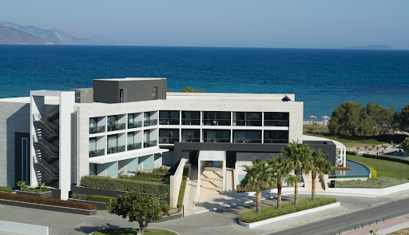

Aqua Blu
Hotel
Aqua Blu, proud member of the Small Luxury Hotels of the World, is a unique adults-only 5-star boutique hotel with the awarded state of the art spa, Tamaris and the well-known fine dining restaurant, Cuvée, set on a beautiful waterfront corner on the North Eastern part of Kos.
A striking-looking, contemporary building that looks out onto a sparkling Aegean Sea, Aqua Blu is surrounded by a bright blue pool and water features that emanate sophistication by day and romance by night. The suites at Aqua Blu are exquisitely designed with stylish modern décor overlooking the sea, private reviving swimming pools and constitute the perfect spot to wind down every evening and watch the magnificent sunset.
The seductive blend of exclusivity, unique architectural design, stunning location and adjoining white sand beach, make Aqua Blu the ultimate destination on the Island of Kos.
Contact us
- T +30 22420 22440
- T +30 22420 22277
- info@aquabluhotel.gr
- Lambi Beach Kos Island - 85300 Greece